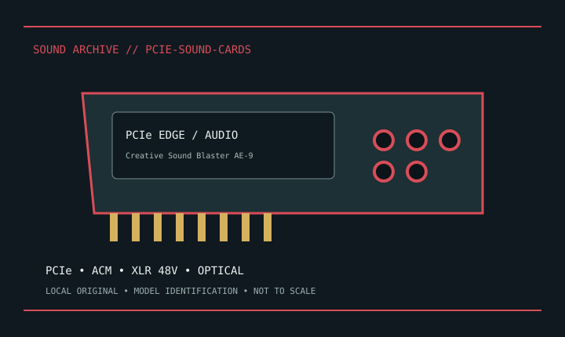

[ INDIVIDUAL MODEL // SOUND HARDWARE ]
Creative Sound Blaster AE-9
PCIe card with external Audio Control Module; multichannel and optical I/O; ACM XLR mic input supports documented switchable 48 V phantom.

Model-specific specifications
| Exact model / scope | Creative Sound Blaster AE-9. Pair ACM and card; verify phantom state before connecting mic. Preserve correct SKU and Windows driver. |
|---|---|
| Bus / host | PCIe x1. |
| Documented functions / connectors | PCIe card with external Audio Control Module; multichannel and optical I/O; ACM XLR mic input supports documented switchable 48 V phantom. |
| Conversion / formats | Digital rates and driver modes are model-specific; consult the linked manufacturer manual. |
| Drivers / OS | Use the linked model-specific manufacturer support/manual page. Driver and supported OS availability depends on release; no undocumented OS compatibility is asserted. |
| Power / microphone | No 48 V XLR supply unless explicitly noted for a bundled external module. |
Compatibility & preservation
Pair ACM and card; verify phantom state before connecting mic. Preserve correct SKU and Windows driver.
- Photograph model/revision, connectors and included accessories before service.
- Retain the matching manual, driver/firmware and known-working host/routing configuration.
- Follow documented signal levels, connector pinout and power requirements; physical fit alone is not compatibility.
Manufacturer sources
- Manufacturer product information — Creative Sound Blaster AE-9Product/model source; match the exact revision and board.
- Manufacturer support and documentationOfficial model documentation, drivers and OS compatibility information.